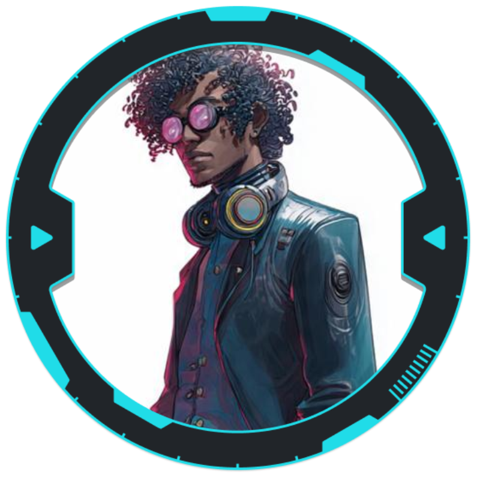

Jason

História
Não sabemos a história por enquanto, apenas que gosta de matar os outros.
Armas e Armaduras
- Pistola Muito Pesada (8) - 28 Munições Pistola MP
- Jaqueta Blindada Leve Corpo (10 / 11)
- Jaqueta Blindada Leve Cabeça (11 / 11)
Cyberwares e Programas
- Link Neural (4 / 5)
- Plugues de Interface
- Lentes Mutáveis
Equipamentos
- Agente
- Ciberdeque (0 / 7 Slots)
- Oculos de Realidade Virtual
- Programas: 1x Armor (-4 Dano Cerebral), 1x Sword (3D6 REZ em Black ICE, 2D6 REZ não Black ICE), 1x PoisonFlatline (Destroí um programa não Black ICE aleatório), 1x VrizzBolt (1D6 Dano Trilha-Redes, -1 Ação próximo turno), 1x Worm (+2 Backdoor), 1x Eraser (+2 Cloak), 1x Shield (Impede o primero ataque não Black ICE de dano)
- Rações (5)